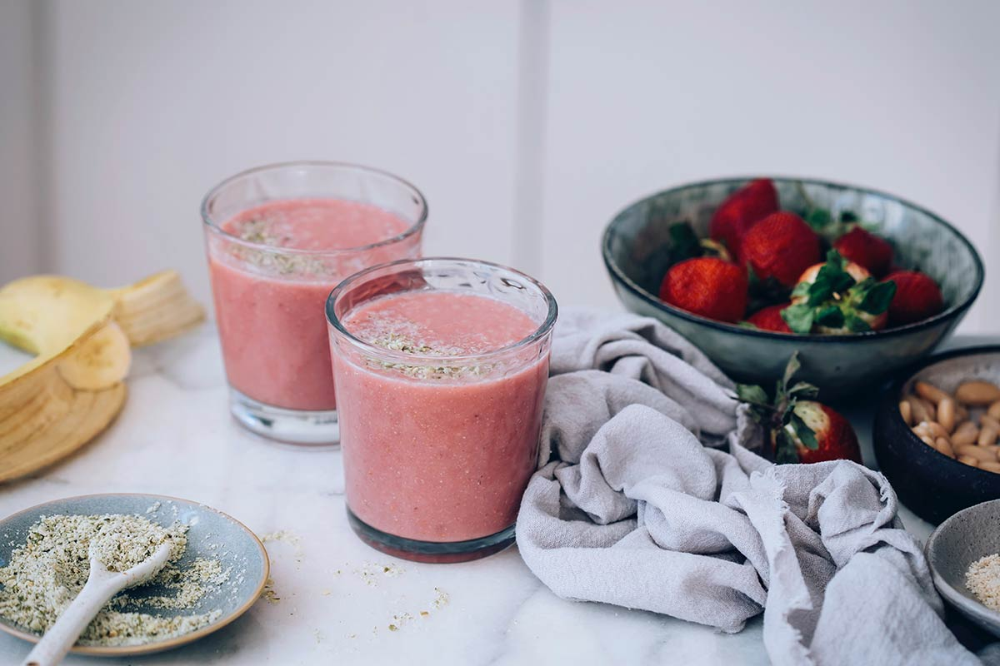

2minute breakfast smoothie
Whizz up a low fat breakfast smoothie in no time. Use banana with other soft fruit, plus honey for a little sweetness and oats for slow-release fuel.
Photograph by Nutriciously
- Preparation time
- 2 min
- Difficulty
- Easy Peasy
- Servings
- 2 servings
Ingredients
- 1 banana
- 1 tbsp porridge oats
- 80g soft fruit (whatever you have – strawberries, blueberries, and mango all work well)
- 150ml milk
- 1 tsp honey
- 1 tsp vanilla extract
Method
-
Step 1
Put all the ingredients in a blender and whizz for 1 min until smooth.
-
Step 2
Pour the banana oat smoothie into two glasses to serve.